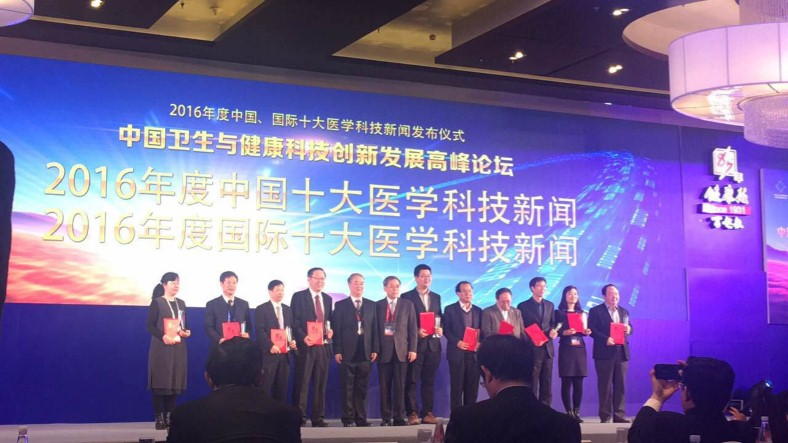

新闻动态
本课题组“病毒可直接转化为疫苗”的研究获2016年度中国十大医学科技新闻奖



2017年1月14日，在国家卫生计生委指导下，健康报社与相关医学科研机构联手举办中国卫生与健康科技创新发展高峰论坛，论坛向公众发布了2016年度的中国十大医学科技新闻和国际十大医学科技新闻。我院周德敏教授与张礼和院士领衔的“病毒可直接转化为疫苗”的研究获2016年度中国十大医学科技新闻奖。该技术以流感病毒为模型，在保留病毒完整结构和感染力的情况下，仅突变病毒基因的一个三联码，使流感病毒由致命性传染源变为了预防性疫苗，这一技术有望简化疫苗研发过程。周德敏教授在会上接受了全国人大副委员长、中国药学会理事长桑国卫院士颁发的证书。
中国十大医学科技新闻备选条目共83项，均为以中国学者为主完成的医学科学技术成果，由评审组对2016年度《科学》《自然》《英格兰医学杂志》等18种权威期刊，以及《健康报》《人民日报》《科技日报》等20多家主流媒体门户网站进行检索分析后得出，评审组专家来自国内基础医学、临床医学、公共卫生、中医药、药学等不同领域的12位院士和科研管理、媒体的专家。